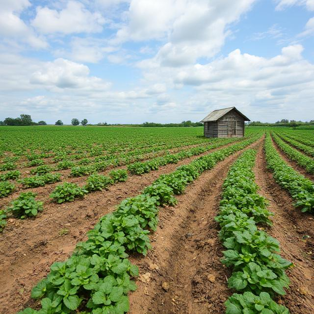

Our Farm:

Here at Palatable Potatoes, we try to maintain transparency with our customers. This means we are open about our farm and the conditions in which our potatoes are grown. We are actively improving these conditions so that we are able to get more species of potatoes for our farm.
On our farm, we have four potato fields, one for each species of potatoes we have. We also have some free range chickens able to be obtained from us on our chickens page.
As well as our fields, we also have a green house. This greenhouse is used by our onsite scientists who are actively trying to make bigger, better potatoes for you to enjoy. As well as the greenhouse, we also a team of testers who make sure the potatoes are of a good quality to be sent out to the world. This consists of taste testing, checking the appearance of the potatoes and making sure they will suit to a range of recipes.
If you are recently homeless, jobless or broke, why not join our team of testers? A fun, family environment, we will provide you with accomadation and a stable pay as well as funeral benefits from our collaborators, . If you are interested in joining us, read through these terms and conditions and then contact us. We sincerely look forward to hearing from you, as we are always looking for new people to join us on our journey.
Farm tours are provided for free and can be organised through our contact us page.